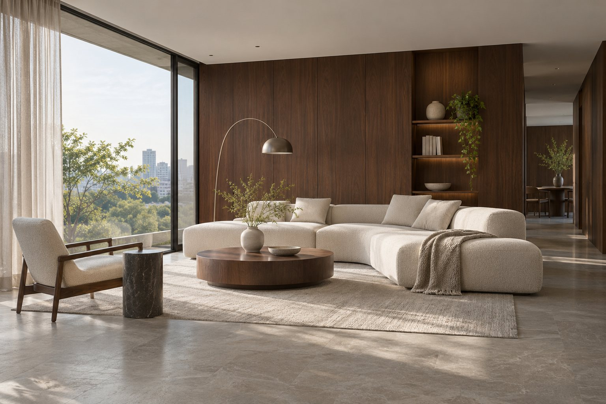
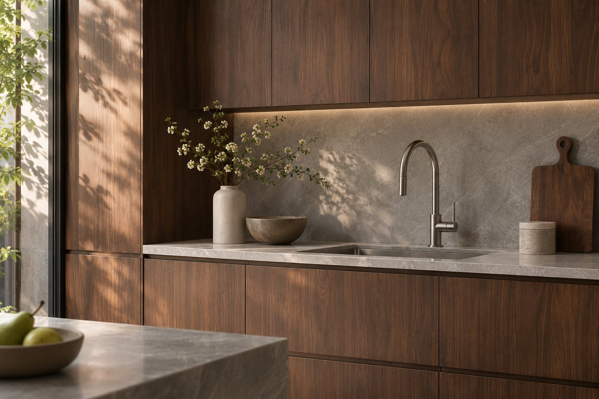
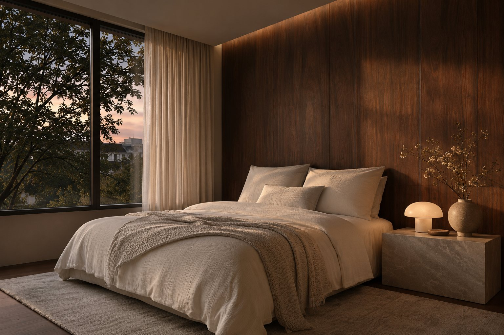

Жилые интерьеры / кейс-концепт
Увидеть пространство до ремонта
Проверить интерьер в материалах и свете.

Задача
У условного владельца уже есть планировка и подбор мебели, но отдельные образцы не складываются в целую квартиру. На маленьком фрагменте трудно оценить тёмное дерево или вечерний свет. Нужны согласованные изображения, по которым можно обсуждать конкретные решения.
Что сделали

Собираем исходники
Запрашиваем план, высоты, референсы и выбранные предметы.
Строим сцену
Проверяем геометрию и камеры на черновых ракурсах.
Настраиваем материалы
Уточняем фактуру, оттенки и свет вместе с заказчиком.
Передаём изображения
Собираем финальные ракурсы и отмечаем согласованные решения.
Ракурсы, которые можно сравнивать

Спальня: отдельный световой сценарий.
Визуальный комплект с согласованными камерами и материалами. Изображения помогают выбрать интерьерное решение; рабочие чертежи и спецификация для закупки заказываются отдельно.
Лист согласования / пример
Демонстрационный фрагмент, не рабочая документация.
| Ракурс | Решение для обсуждения |
|---|---|
| Гостиная · дневной свет | Камень и тёмное дерево |
| Кухня · детали | Фактура фасада и столешницы |
| Спальня · вечер | Свет у изголовья и текстиль |
Этапы и срок
После согласования числа помещений и ракурсов
- План и материалы
- Черновые камеры
- Согласование фактур
- Финальные ракурсы
Ориентир по стоимости
30 000 ₽
Цена-ориентир из прайса. Число комнат, ракурсов и кругов правок фиксируем до начала работ. Здесь показан сгенерированный пример визуального подхода.
Итоговый состав, срок и стоимость фиксируем после разбора исходных данных.